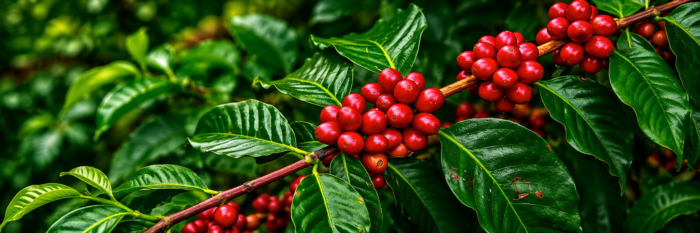

Expected Attendees
People from across the coffee value chain.

Connecting growers, innovators and global markets through Uganda's coffee story.
Register as ExhibitorThe Uganda International Coffee Expo 2026 is a fictional examination event designed to bring together coffee farmers, processors, exporters, researchers, buyers and investors. The three-day showcase explores sustainable production, value addition, market access and opportunities across the coffee value chain.
Presented as a concept for the Ministry of Agriculture, Animal Industry and Fisheries (MAAIF), the expo imagines a vibrant meeting point for Uganda's coffee sector and international partners. Through exhibitions, keynote talks and practical discussions, participants share ideas to strengthen quality, innovation and the competitiveness of Ugandan coffee.
Illustrative figures for the fictional expo.
People from across the coffee value chain.
Products, technology and services on display.
Regional and international connections.
Insights from diverse industry specialists.
Explore the sample programme and featured speakers.